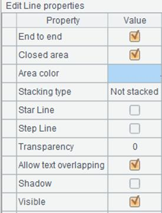
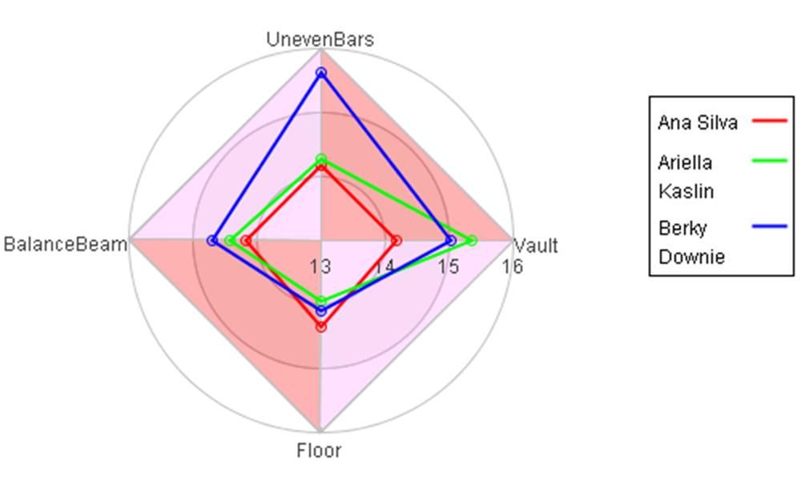
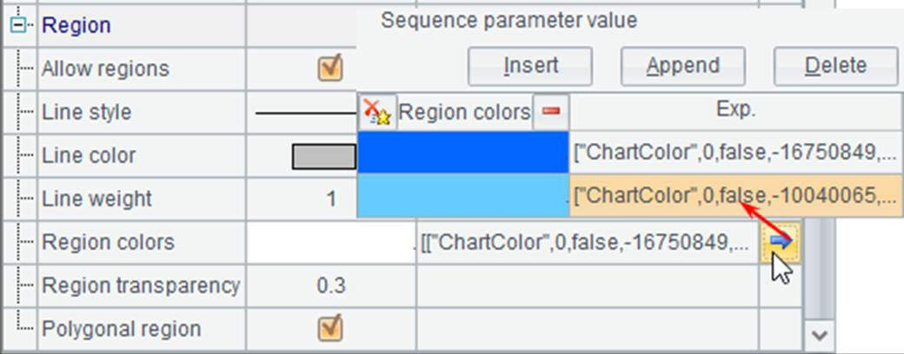
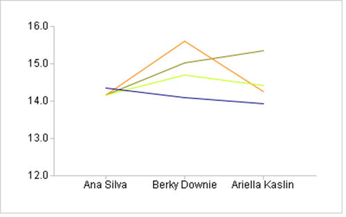
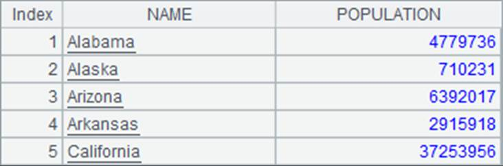
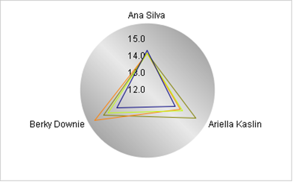

The line graph can be used to plot various charts like polyline charts, curve charts and radar charts. Below is the potting algorithm for a polyline chart displaying gym scores:
|
|
A |
|
1 |
=canvas() |
|
2 |
=demo.query("select * from GYMSCORE") |
|
3 |
=A1.plot("GraphLine","categories":A2.(NAME+","+EVENT), "values":A2.(SCORE),"yStartValue":12) |
|
4 |
=A1.draw@p(400,250) |
A3 sets properties of the line graph:

Using the category data and series data in the previous section, A4 gets the following plotting result:

Set desired line style or plot dots on a polyline chart by setting line properties in A3:

Set both Plot data points and Shade as false and increase the Line thickness. Now the plotting result is:

In this case dots aren¡¯t plotted and shading effect isn¡¯t displayed; and the polyline becomes thicker.
Change the line graph¡¯s Type to Radar to plot a radar chart in a polar coordinate system:

Plotting result is:

You can also plot a 3D polyline chart or a curve fitting plot by changing the line graph type.